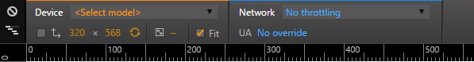

Mobile emulation now comes for free with chrome developer tools. This is useful when developing mobile websites that need to be responsive, show\hide content when the page gets too big\too small and so forth.
The mobile emulation button is here:
When selected, it will give you options as to what sort of device you want to debug with (iPhone 5\6, Nexus 5, Lumia 920 and so forth) and whether or not you want to throttle your internet connection. For example, to simulate what a 3G only visitor experience would be like.

Demo for this page is to emulate it for any mobile device and all of the images will disappear.